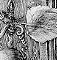

Any object with the attribute edible can be eaten by the player,
and the library provides the action Eat for this.
If it succeeds, the library removes whatever was eaten from the object
tree, so that it disappears from play (unless the designer has written
any code which later moves it back again). Two edible objects have
already appeared in ‘Ruins’: the mushroom,
§4, and the honeycomb,
§5.
Because drinking is a less clear-cut matter than
eating, there is no attribute called drinkable. Although
the library does provide the action Drink, you have
to write your own code to show what happens when the object has
been drunk. Here is an example where the object is entirely consumed:
Object -> "glass of milk"
with name 'glass' 'of' 'milk',
before [;
Drink: remove self;
"Well, that's the sixth stomach that hillside
of grass has been in.";
];
Other rules which might be needed, instead of simply removing the object, would be to replace it with an “empty glass” object, or to change some counter which records how many sips have been taken from a large supply of drink.
• REFERENCES
Players discover almost at once that ‘Advent’ contains
“tasty food”, actually tripe although the text is too
delicate to say so. (Type “get tripe ration” if you don't
believe this.) Less well known is that the moss growing on the Soft
Room's walls is also edible.
•The product-placement parody
‘Coke Is It’ contains the occasional beverage.
(“You are standing at the end of a road before a small brick
building. Coca-Cola… Along The Highway To Anywhere, Around
The Corner From Everywhere, Coca-Cola is The Best Friend Thirst Ever
Had. A small stream flows out of the building and down a gully.”)
•Inform doesn't provide an
automatic system for handling liquids because it is difficult to find
one that would satisfy enough people for enough of the time: for
more on the issues that liquids raise, see
§50. In its handling of liquids the
source code for the alchemical mystery ‘Christminster’
is much borrowed from.